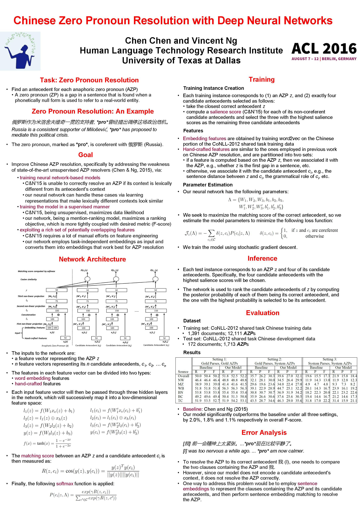

Chinese Zero Pronoun Resolution with Deep Neural Networks
Chen Chen and Vincent Ng.
Proceedings of the 54th Annual Meeting of the Association for Computational Linguistics (Volume 1: Long Papers), pp. 778--788, 2016.
Click here for the
PDF version.
Abstract
While unsupervised anaphoric zero pronoun
(AZP) resolvers have recently been
shown to rival their supervised counterparts
in performance, it is relatively difficult
to scale them up to reach the next level
of performance due to the large amount
of feature engineering efforts involved and
their ineffectiveness in exploiting lexical
features. To address these weaknesses,
we propose a supervised approach to AZP
resolution based on deep neural networks,
taking advantage of their ability to learn
useful task-specific representations and effectively
exploit lexical features via word
embeddings. Our approach achieves stateof-the-art
performance when resolving the
Chinese AZPs in the OntoNotes corpus.
BibTeX entry
@InProceedings{Chen+Ng:16b,
author = {Chen Chen and Vincent Ng},
title = {Chinese Zero Pronoun Resolution with Deep Neural Networks},
booktitle = {Proceedings of the 54th Annual Meeting of the Association for Computational Linguistics (Volume 1: Long Papers)},
pages = {778--788},
year = 2016}
